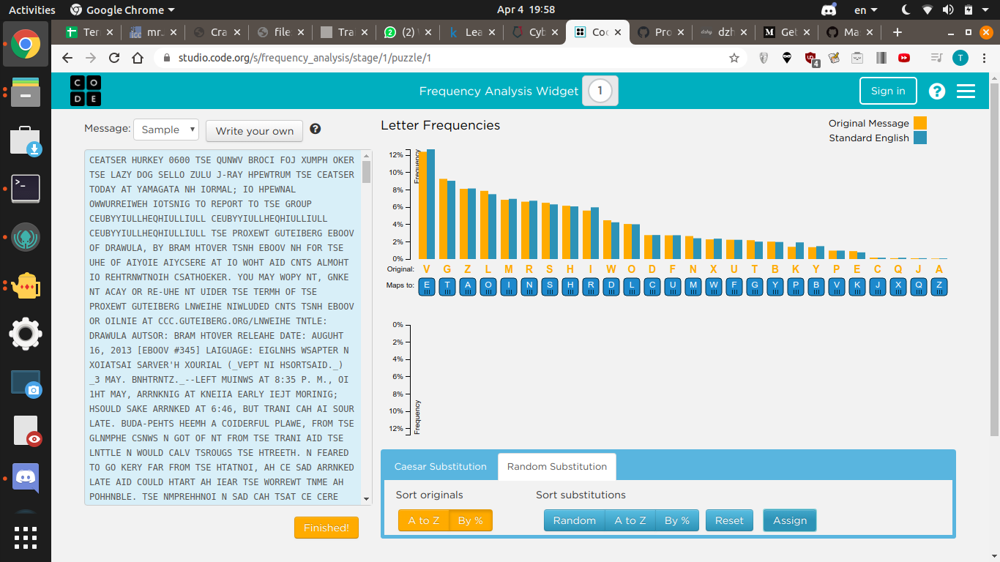
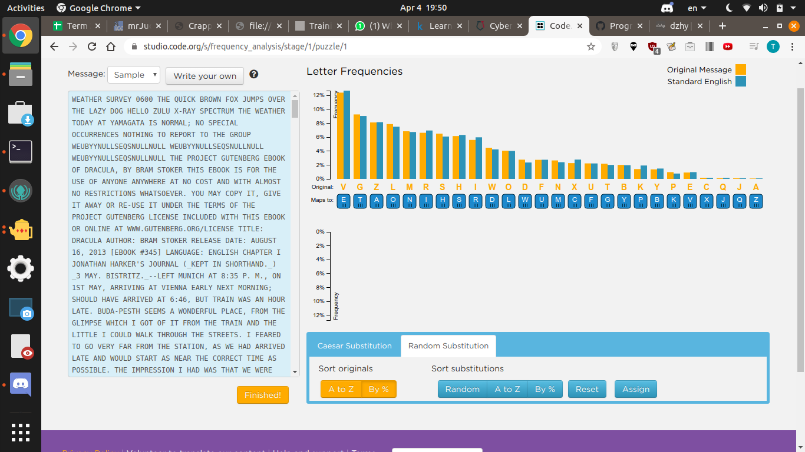

Original Github Link
Substitution Ciphers
100 Points, Data Science
Description
There are patterns in most things we create, these patterns can be used to study and recover data. In this challenge we will be using the naturally observed frequencies of English words and letters to decode a cipher text made by a simple substitution cipher.
English like most other languages has letter frequencies associated with it:
- See https://commons.wikimedia.org/wiki/File:English_letter_frequency_(alphabetic).svg
- See https://en.wikipedia.org/wiki/Frequency_analysis
.svg){kind=link}
You may find this tool useful: https://studio.code.org/s/frequency_analysis FLAG IS IN ALL CAPS WITH CTFSG{####} FORMAT
Solution
Using this website, match the letters by frequency, and you fill get this

However, you notice there are some letters off, like FOJ, instead of FOX. Just do a few substitutions (switch J and X substitutions) and you get something resembling English.

After that just use Ctrl-F "CTFSG{" to find the Flag in the Text
IT MADE AN INSTANT CHANGE IN HIM, FOR THE FURY PASSED SO QUICKLY THAT I COULD HARDLY BELIEVE THAT IT WAS EVER THERE. "TAKE CARE," HE SAID, "TAKE CARE HOW YOU CUT YOURSELF. IT IS MORE CTFSG{GOT_FREQUENCIES_BUTWHEREARETHEWAVELENGTHS} DANGEROUS THAN YOU THINK IN THIS COUNTRY." THEN SEIZING THE SHAVING GLASS, HE WENT ON:
Flag
CTFSG{GOT_FREQUENCIES_BUTWHEREARETHEWAVELENGTHS}